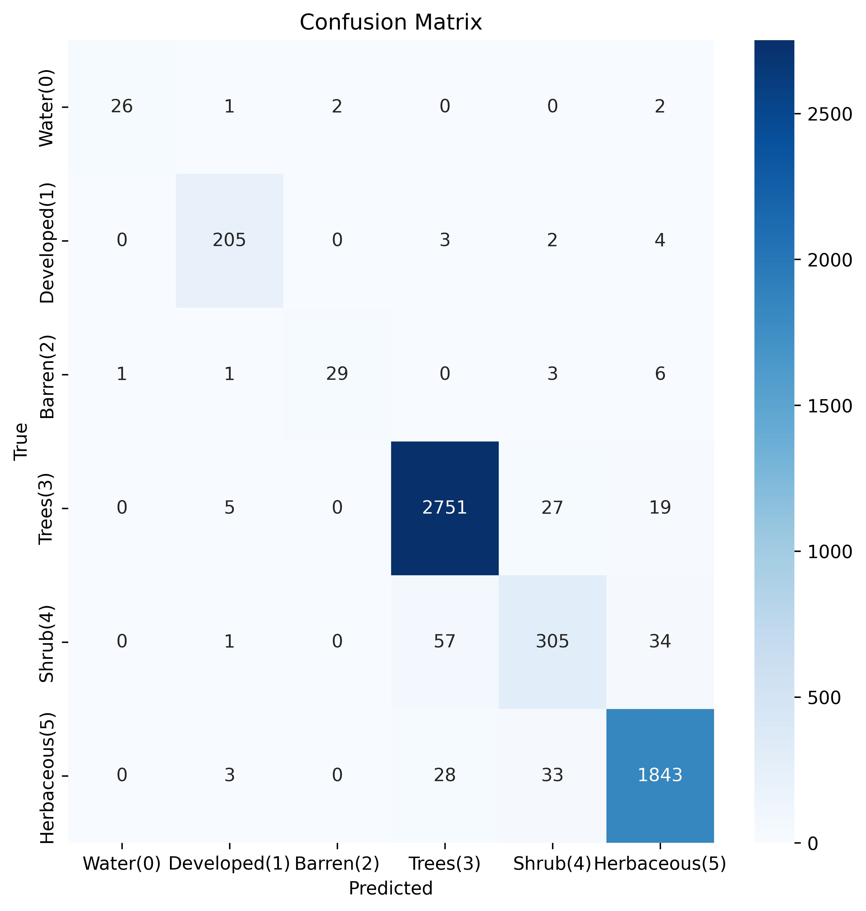

Model - Biome 12 - Mediterranean Forests, Woodlands and Scrub.
Figure 1. CNN trained on Sentinel-2 data. Confusion Matrix.
The main misclassifications are between the Shrub and Tree classes.
More than half the Shrub classess are misclassified.
Model accuracy is 87% and F1-macro score is 0.80 after 500 ephochs.

Figure 2. Neural network trained on AlphaEarth data. Confusion Matrix.
The model has very high accuracy for all classes.
Model accuracy is 96% and F1-macro score is 0.90 after 500 ephochs.